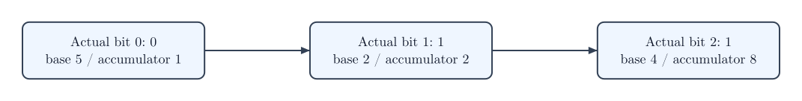
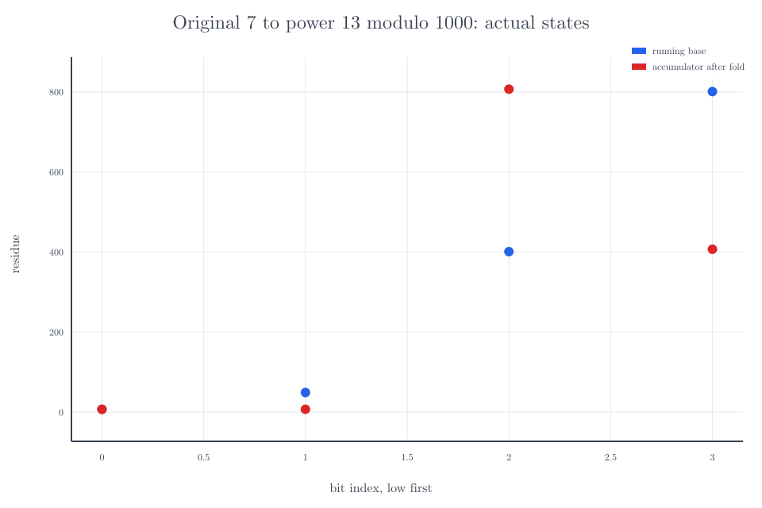
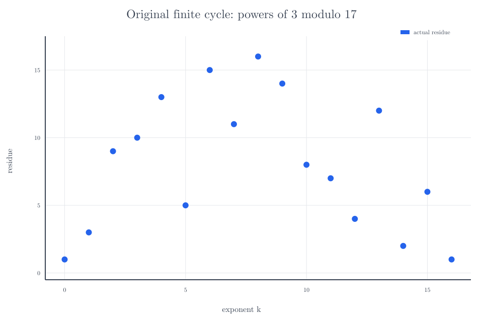
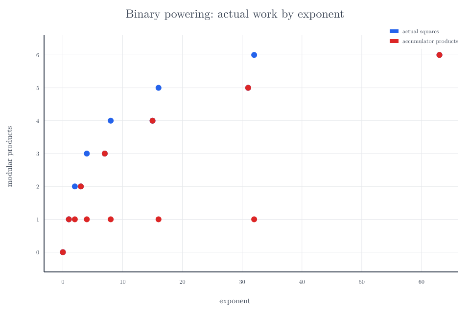

Modular exponentiation
Abstract
Computing an integer power modulo a positive integer should not require constructing the enormous unreduced power. We derive binary powering, inspect its actual bit transitions, retain the original power examples, and compare measured operation counts with the exact bit-count formula. The implementation covers every unsigned 64-bit input using complete 128-bit intermediate products.
The invariant behind binary powering
Write e as a sum of powers of two. At every loop entry, let z be the accumulator, b the running base and q the unprocessed exponent. The invariant is
Initially z=1, b=a modulo m, q=e. For q=2t, keep z and replace b by b squared and q by t. For q=2t+1, first multiply z by b, then make the same replacements. These preserve the invariant. The nonnegative exponent halves until zero, when z is the requested residue. This proof does not require a prime modulus or a coprime base.
Three bits that can be checked by hand
For 5 to the sixth power modulo23, the low-to-high bits are0,1,1. The running bases are5,2,4; the accumulator is1,2,8 after the three folds. The native trace below records the states of the same kernel used by the ordinary function. It also records the final square to16, although no subsequent iteration uses that value.
#include <dm/dm.hpp>
int main() {
std::filesystem::create_directories("build");
auto t = dm::algorithms::mod_pow_trace(5, 6, 23);
std::print("| bit | remaining | base before | accumulator before | multiply | accumulator after | " "squared base |\n| ---: | ---: | ---: | ---: | --- | ---: | ---: |\n");
dm::graphics::Diagram d;
for (auto &s : t.steps) {
std::print("| {} | {} | {} | {} | {} | {} | {} |\n", s.bit_index,
s.remaining_before, s.running_before, s.accumulator_before,
s.multiply, s.accumulator_after, s.squared_base);
auto id = std::to_string(s.bit_index);
d.node(id, {6.0 * s.bit_index, 0},
std::format("Actual bit {}: {}\nbase {} / accumulator {}",
s.bit_index, s.multiply ? 1 : 0, s.running_before,
s.accumulator_after));
if (s.bit_index)
d.edge(std::to_string(s.bit_index - 1), id);
}
d.save_svg("build/modpow_tiny.svg");
}| bit | remaining | base before | accumulator before | multiply | accumulator after | squared base |
|---|---|---|---|---|---|---|
| 0 | 6 | 5 | 1 | false | 1 | 2 |
| 1 | 3 | 2 | 1 | true | 2 | 4 |
| 2 | 1 | 4 | 2 | true | 8 | 16 |

The original four-bit example
The original7 to the thirteenth power modulo1000 returns407. Its three set bits multiply the accumulator by7,401 and801. Four squares are performed, including the unused final square. The table and figure read the actual trace rather than implementing a second powering loop. The remaining spot checks include exponent zero and a composite modulus.
#include <dm/dm.hpp>
int main() {
std::filesystem::create_directories("build");
auto t = dm::algorithms::mod_pow_trace(7, 13, 1000);
std::vector<double> bit, base, acc;
std::print("| bit | multiply | base before | accumulator after | squared base |\n| ---: | --- | ---: | " "---: | ---: |\n");
for (auto &s : t.steps) {
bit.push_back(s.bit_index);
base.push_back(s.running_before);
acc.push_back(s.accumulator_after);
std::print("| {} | {} | {} | {} | {} |\n", s.bit_index, s.multiply,
s.running_before, s.accumulator_after, s.squared_base);
}
std::print("\nResult: {}. Spot checks: {}, {}, {}.\n", t.result,
dm::algorithms::mod_pow(2, 10, 1000),
dm::algorithms::mod_pow(3, 0, 7),
dm::algorithms::mod_pow(7, 256, 13));
auto p = dm::graphics::RPlot::create();
p.points(bit, base, "running base", {37, 99, 235}, 6).points(
bit, acc, "accumulator after fold", {220, 38, 38}, 6).title(
"Original 7 to power 13 modulo 1000: actual states").x_label(
"bit index, low first").y_label("residue").save_svg(
"build/modpow_original.svg");
}| bit | multiply | base before | accumulator after | squared base |
|---|---|---|---|---|
| 0 | true | 7 | 7 | 49 |
| 1 | false | 49 | 7 | 401 |
| 2 | true | 401 | 807 | 801 |
| 3 | true | 801 | 407 | 601 |
Result: 407. Spot checks: 24, 1, 9.

A finite multiplicative cycle
The original3 to power k modulo17 example visits every nonzero residue for k=0..15 and returns to1 at k=16. Distinctness of those sixteen displayed residues proves that3 has order16 in this particular group. This tiny cycle is directly enumerable; its visual appearance provides no evidence for the difficulty of discrete logarithms at cryptographic sizes.
Fermat's little theorem predicts a to the twelfth power modulo13 equals1 for each base a=2..6. The native calls retain those original checks. Passing such checks alone is not a primality certificate for an arbitrary modulus.
#include <dm/dm.hpp>
int main() {
std::filesystem::create_directories("build");
std::vector<double> x, y;
std::print("| exponent | 3 to exponent modulo17 |\n| ---: | ---: |\n");
for (std::uint64_t k = 0; k <= 16; ++k) {
auto v = dm::algorithms::mod_pow(3, k, 17);
x.push_back(k);
y.push_back(v);
std::print("| {} | {} |\n", k, v);
}
std::print("\n| base | base to power12 modulo13 |\n| ---: | ---: |\n");
for (std::uint64_t a = 2; a <= 6; ++a)
std::print("| {} | {} |\n", a, dm::algorithms::mod_pow(a, 12, 13));
auto p = dm::graphics::RPlot::create();
p.points(x, y, "actual residue", {37, 99, 235}, 6).title(
"Original finite cycle: powers of 3 modulo 17").x_label("exponent k").y_label("residue").save_svg("build/modpow_cycle.svg");
}| exponent | 3 to exponent modulo17 |
|---|---|
| 0 | 1 |
| 1 | 3 |
| 2 | 9 |
| 3 | 10 |
| 4 | 13 |
| 5 | 5 |
| 6 | 15 |
| 7 | 11 |
| 8 | 16 |
| 9 | 14 |
| 10 | 8 |
| 11 | 7 |
| 12 | 4 |
| 13 | 12 |
| 14 | 2 |
| 15 | 6 |
| 16 | 1 |
| base | base to power12 modulo13 |
|---|---|
| 2 | 1 |
| 3 | 1 |
| 4 | 1 |
| 5 | 1 |
| 6 | 1 |

Exact work counts and full-width arithmetic
For m greater than1 and positive e, let L be its bit width and H its population count. The actual kernel performs L squares and H accumulator products, exactly L+H modular products. There is no omission of the last square. Each trace record corresponds to one processed bit. The following input pairs have the same bit width but different population counts, separating these two contributions.
On this fixed64-bit API, L is at most64 and P at most128. Describing the loop as logarithmic counts word-level modular operations; it is not a claim about arbitrary-precision multiplication cost. Ordinary execution uses constant driver storage; the optional trace stores L records. The trace cap defaults to64, zero disables it, and an insufficient nonzero cap throws before powering. It limits bit records, not bytes or execution time.
A product of two arbitrary unsigned64-bit integers is strictly below2 to power128, so a complete unsigned128-bit intermediate represents it exactly. Reducing after multiplication therefore works even at UINT64_MAX. Multiplying in64 bits first would silently discard high bits. Modulus zero throws; modulus one returns zero with no steps even for0 to power0. Exponent zero with modulus greater than1 returns one without a loop.
#include <dm/dm.hpp>
int main() {
std::filesystem::create_directories("build");
std::vector<double> x, squares, folds;
std::print("| exponent | actual bits | squares | accumulator products | total products | residue |\n| " "---: | ---: | ---: | ---: | ---: | ---: |\n");
for (std::uint64_t e : {0ULL, 1ULL, 2ULL, 3ULL, 4ULL, 7ULL, 8ULL, 15ULL,
16ULL, 31ULL, 32ULL, 63ULL}) {
auto t = dm::algorithms::mod_pow_trace(7, e, 1000);
x.push_back(e);
squares.push_back(t.work.squarings);
folds.push_back(t.work.accumulator_products);
std::print("| {} | {} | {} | {} | {} | {} |\n", e, t.work.bits,
t.work.squarings, t.work.accumulator_products,
t.work.products, t.result);
}
constexpr auto m = std::numeric_limits<std::uint64_t>::max();
auto full = dm::algorithms::mod_pow_trace(m - 1, m, m);
auto one = dm::algorithms::mod_pow_trace(0, 0, 1);
std::print("\nFull-width result: {}, steps: {}, products: {}. Modulus-one zero power: {}, steps: {}.\n",
full.result, full.steps.size(), full.work.products, one.result,
one.steps.size());
auto p = dm::graphics::RPlot::create();
p.points(x, squares, "actual squares", {37, 99, 235}, 6).points(
x, folds, "accumulator products", {220, 38, 38}, 6).title(
"Binary powering: actual work by exponent").x_label("exponent").y_label(
"modular products").save_svg("build/modpow_work.svg");
}| exponent | actual bits | squares | accumulator products | total products | residue |
|---|---|---|---|---|---|
| 0 | 0 | 0 | 0 | 0 | 1 |
| 1 | 1 | 1 | 1 | 2 | 7 |
| 2 | 2 | 2 | 1 | 3 | 49 |
| 3 | 2 | 2 | 2 | 4 | 343 |
| 4 | 3 | 3 | 1 | 4 | 401 |
| 7 | 3 | 3 | 3 | 6 | 543 |
| 8 | 4 | 4 | 1 | 5 | 801 |
| 15 | 4 | 4 | 4 | 8 | 943 |
| 16 | 5 | 5 | 1 | 6 | 601 |
| 31 | 5 | 5 | 5 | 10 | 743 |
| 32 | 6 | 6 | 1 | 7 | 201 |
| 63 | 6 | 6 | 6 | 12 | 343 |
Full-width result: 18446744073709551614, steps: 64, products: 128. Modulus-one zero power: 0, steps: 0.

Conclusion and limits
The actual histories explain both the residue and the operation count: folding set bits preserves the invariant while halving the remaining exponent. The original examples are retained without a report-side implementation. Complete128-bit products handle the full unsigned64-bit domain, and explicit zero/one-modulus rules settle the boundary cases. Exponent-dependent branches and observable traces make these APIs unsuitable as constant-time secret-key primitives; they do not validate protocols or establish primality.
References
Diffie and Hellman, New Directions in Cryptography (1976)
gives historical repeated-squaring context. The exact loop order, final square
and capture contract described here belong to the checkout's
modular_exponentiation.hpp API.
Verification
The ten-report batch passes95 CTest cases,31 directly instrumented ASan/UBSan
cases,83 compiled and executed public examples,363/363 scoped documentation
definitions and ten representative hovers. Independent Python integer
arithmetic, MT19937-64/variation replay, graph sets, analytic interpolation,
circle boundary enumeration and actual-sample integration reconstruction agree
on915459 captured records. All six original RMS summaries are separately checked
using96 native MISER estimates and1600000 independently reproduced
plain-comparator points. Frozen valid-input comparisons include the original
seeded solver paths and full MOEA/D fronts. Ten checkout headers and ten
identically installed development headers compile independently, and an
installed-header native consumer links and runs. Each report has four executed
complete programs, four reviewed native figures and both HTML/Markdown exports
with computed-result and image-byte checks. This is a scoped native API audit,
not an installation claim for every language binding. Receipts:
build/mepml-conversion/batch-234-243/.